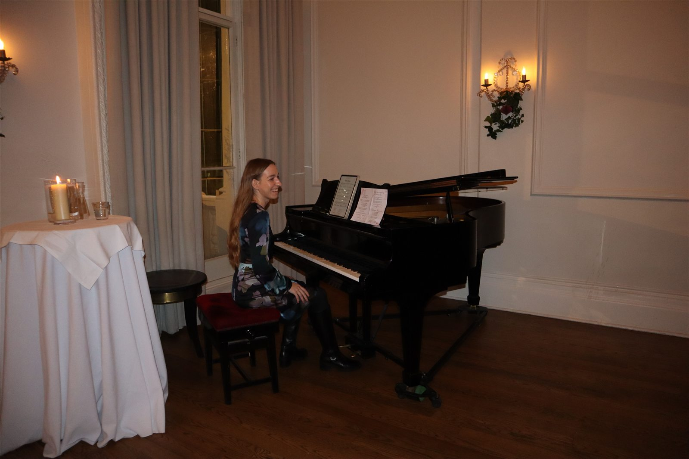
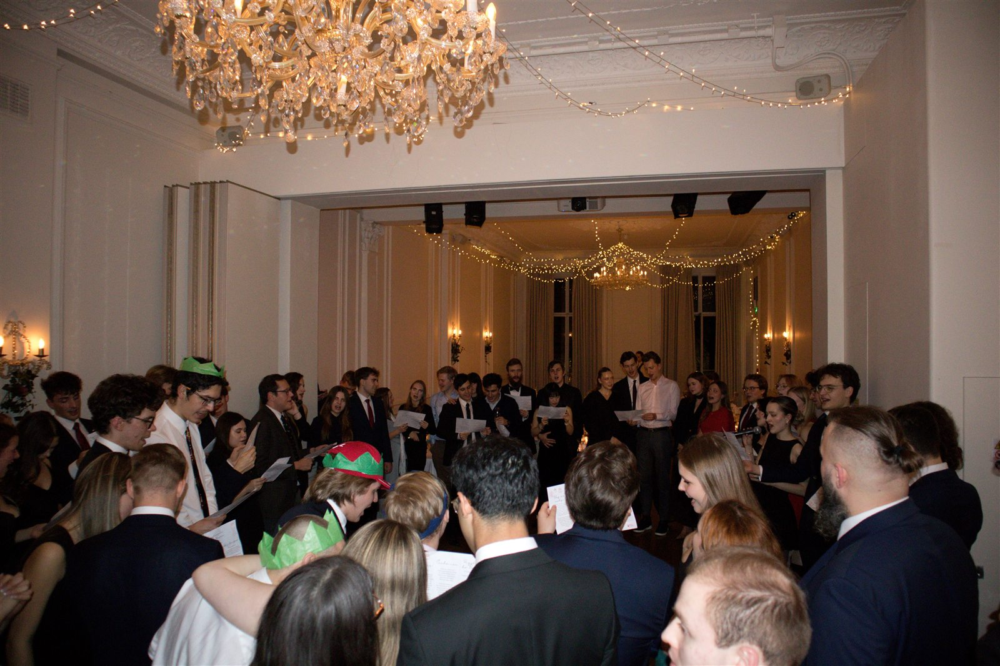
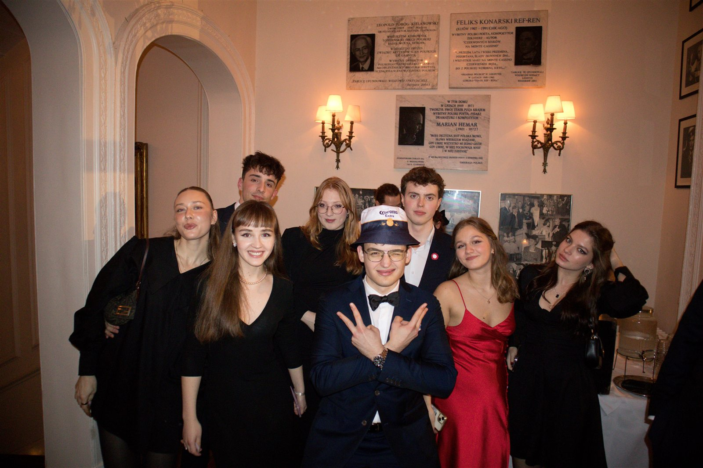
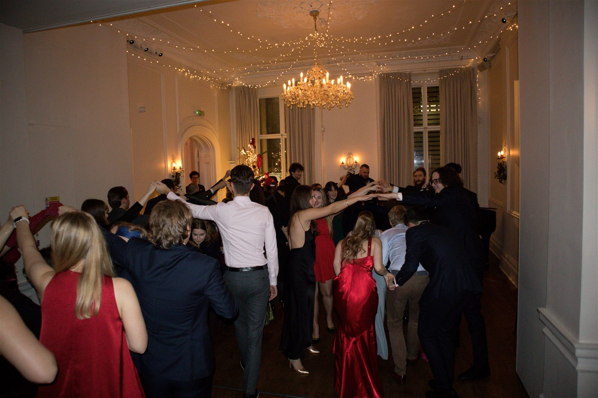
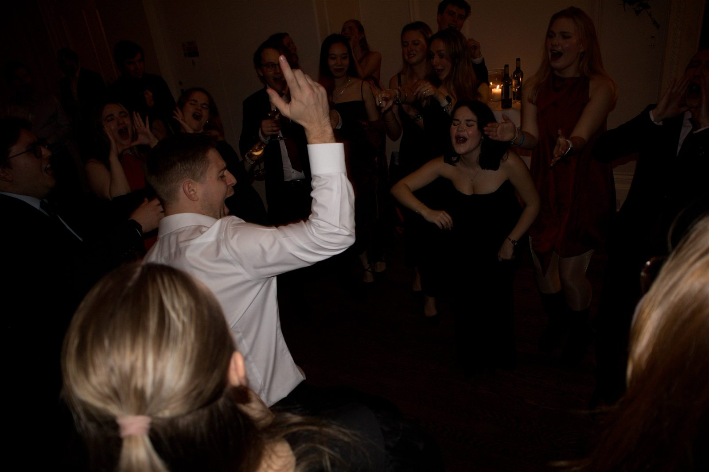

Wigilia z dala od domu — polska kolacja wigilijna dla 100 studentów.
Nasza doroczna, flagowa Kolacja Wigilijna zgromadziła 100 polskich studentów w restauracji Ognisko Polskie w South Kensington. Goście zasiedli do tradycyjnej, trzydaniowej kolacji, a potem przyszedł czas na rozmowy i wspólne kolędowanie — namiastka polskich świąt rodzinnych dla studentów spędzających ten czas z dala od domu.
Ten wieczór stał się jedną z najbardziej lubianych tradycji Federacji: to okazja, by zwolnić na koniec semestru, zaśpiewać kolędy ze starymi i nowymi znajomymi i uczcić społeczność, którą zbudowaliśmy w całej Wielkiej Brytanii.
Szczególne podziękowania kierujemy do Roksana Dąbkowska, pianistki z Guildhall School of Music and Drama, za akompaniament do naszych kolęd przez cały wieczór.






Przeglądaj i pobierz pełny album z Kolacji Wigilijnej.